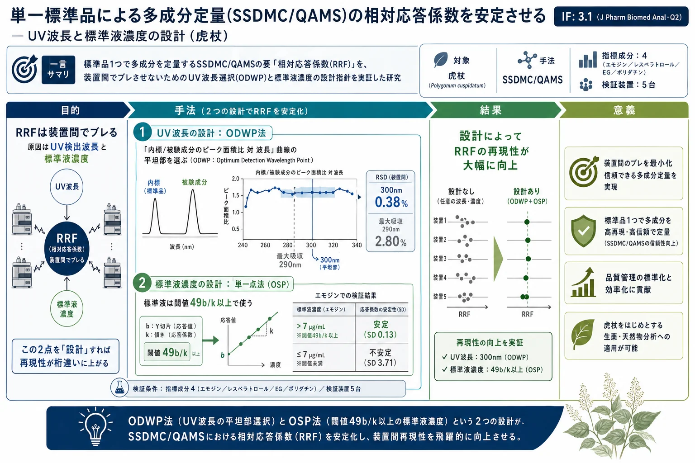

単一標準品による多成分定量(SSDMC/QAMS)の相対応答係数を安定させる — UV波長と標準液濃度の設計（虎杖）

<!-- 方針: 全訳＋必要に応じた補足。原文構成に沿って全節を訳出。式番号・図表番号は原文準拠。「> 補足:」は訳者注。 -->
書誌情報
- 原題: Design of ultraviolet wavelength and standard solution concentrations in relative response factors for simultaneous determination of multi-components with single reference standard in herbal medicines
- 著者: Ting-Wen Yang, Chao Zhao, Yong Fan, Lian-Wen Qi, Ping Li（中国薬科大学 天然薬物国家重点実験室, 南京）
- 掲載: Journal of Pharmaceutical and Biomedical Analysis 114 (2015) 280–287. https://doi.org/10.1016/j.jpba.2015.05.028（研究論文）
- キーワード: Single standard to determine multi-components（単一標準品での多成分定量）/ Relative response factor（相対応答係数）/ Ultraviolet detection wavelength（UV検出波長）/ Standard solution concentration（標準液濃度）/ Polygonum cuspidatum（虎杖）
- インパクトファクター: 3.1（J Pharm Biomed Anal・JCR2024／Clarivate・Q2）
- 受理経過: 受領 2015-02-25 / 改訂 2015-05-21 / 採録 2015-05-28 / オンライン公開 2015-06-03
補足: 本論文は、本サイト収録のQAMS総説（単一マーカー多成分定量）の「実務でつまずく部分」を正面から潰した研究。SSDMC＝SDMC＝QAMSは同じ手法の別名で、標準品1つ＋相対応答係数(RRF)で他成分を定量する。その最大の弱点は「RRFが装置や日によってブレる」こと。本研究は、そのブレの主因を ①UV検出波長 ②標準液濃度 の2つに絞り、それぞれに具体的な設計法（波長は"平坦部"を選ぶODWP法、濃度は閾値 $49b/k$ 以上)を与えた。用語: RRF=相対応答係数（reference standard の応答係数÷被験成分の応答係数)、RF=応答係数（ピーク面積÷濃度、または検量線の傾き)、OSP=単一点法(one single point)、LRE=検量線回帰式(line regression equation)、ODWP=最適検出波長予測(optimum detection wavelength prediction)、IS=内部標準。指標成分は虎杖(こじょう／Hu Zhang)の エモジン(E)・レスベラトロール(R)・エモジン-8-O-β-D-グルコピラノシド(EG)・ポリダチン(P)。
要旨（Abstract）
単一標準品による多成分定量(SSDMC)は、生薬(HM)の品質評価に実用的な方式である。しかし、装置が異なると相対応答係数(RRF) が一致しない恐れがあり、依然として難しい。本研究では、RRFの再現性に対する2つの鍵——UV波長と標準液濃度——の効果を検討した。UV波長の効果は、（内部標準 対 被験成分の)ピーク面積比 対 波長の関係をプロットして調べた。好ましい波長は曲線の平坦部に設定すべきである。最適化した300 nmは、5台の装置でエモジン／エモジン-8-O-β-D-グルコピラノシドについて RSD 0.38% を与え、最大吸収波長290 nmで得た2.80%より大幅に低かった。次に、エモジンの標準液濃度が応答係数(RF)に与える効果を調べた。単一点法(OSP)では、$49b/k$ 未満の低濃度でRFに有意な変動が生じた。エモジンでは、濃度が 7.00 μg mL⁻¹ より高いとき低いSD(0.13)が得られ、それ未満では高いSD(3.71)となった。開発したSSDMC法を虎杖(Polygonum cuspidatum)10試料の対象成分定量に適用し、従来の検量線法と偏差1%未満で同等の正確さを示した。
1. 序論（Introduction）
生薬製品の世界的需要の増加に伴い、品質管理は重要な課題になった。単一実体の化学薬品と違い、生薬は多様な植物化学成分からなり、多くの場合その効能は多成分の相乗作用から生じる。近年の明確な傾向は、単一マーカー化合物の定量から多成分の定量への移行である。生薬製品でできるだけ多くの化合物を定量する方法が数多く開発されてきたが、これらは大半の標準化合物が市販されておらず、実務上コストが高いため、いまだ実験室段階に留まっている。
単一標準品による多成分定量(SSDMC) は、1つを単一の参照標準として複数成分を同時に定量する代替法である。研究機関や薬局方が、複雑な植物製品の品質管理のために多成分定量に頻用している。この方法は多成分同時定量(SDMC) や単一マーカーによる多成分定量(QAMS) とも呼ばれる。SSDMCは、生薬製品の品質を包括的に管理する簡便で安価な手段だが、装置が異なるとRRFが一致しない恐れがあるため、依然として難しい。
RRFはSSDMCの礎で、参照化合物のRFを被験成分のRFで割った比として計算される。UV検出付きHPLCアッセイで、薬物本体の応答に対し関連化合物を定量するのに広く使われる。試料不純物の標準化合物が入手できないことがあるため、不純物試験でよく使われる代替手段でもあり、生薬製品の多成分同時定量に適用できる可能性を与える。
薬物本体の不純物の多くは薬物自身の誘導体で、UVスペクトルがかなり似ている。注意すべきは、生薬製品の二次代謝物は、同じ骨格でも精緻な化学構造の違いによりUVスペクトルが異なる点である。この問題への注意不足は、生薬分析でSSDMCを使う際の偏差を招きうる。RRFの安定性に影響しうる因子（環境パラメータ・操作パラメータ・ピーク測定パラメータ)が検討され、RRFはUV検出器に最も敏感と観察されている。しかしUV検出波長の最適化は重視されてこなかった。多くの場合、検出波長は内部標準の最大UV吸収波長に基づいて選ばれるが、これは精度評価で常にうまくいくわけではない。SSDMCでRRFの精度・正確さを高める好ましいUV波長の選び方は未解決のままである。もう1つの注目因子は標準液濃度の選択で、単一点法(OSP)でRRFを計算するとき、RRFは低濃度より高濃度でより安定に見えた。
本研究は、RRFの変動に対する2つの鍵——UV波長と標準液濃度——の効果を調べることを目的とした。エモジンとレスベラトロールを内部標準とし、それぞれエモジン-8-O-β-D-グルコピラノシドとポリダチンの濃度を算出した。この4化合物は虎杖(Polygonum cuspidatum)の主要成分である。UV波長の効果は、内部標準と被験成分のピーク面積比（RRF = 面積_内標／面積_被験成分)を異なる波長で計算して調べた。次にエモジンの標準液濃度がRFに与える効果を調べ、検量線回帰式(LRE)法とOSP法を比較した。開発したSSDMC法を虎杖10試料の対象成分定量に適用し、従来の標準検量線法と比較した。
2. 実験（Experimental）
2.1 試薬・材料
エモジン・レスベラトロール・エモジン-8-O-β-D-グルコピラノシド・ポリダチン・バイカリン・バイカレイン(原文 Fig.1)は、中国食品薬品検定研究院(北京)から入手した（純度いずれも98%超)。分析グレードのエタノール・メタノールはSinopharm社(上海)、HPLCグレードのアセトニトリル・ギ酸はTEDIA社(米国)から入手。精製水はMilliporeの純水装置で調製した。虎杖の代表的10ロットは、中国の四川・江蘇・湖北・安徽・江西の各省から採取し、すべてLian-Wen Qi 教授が同定した。証拠標本は中国薬科大学に保管した。
2.2 装置
- 装置1: Shimadzu LC-20AT（四元送液系＋ダイオードアレイ検出器(DAD))
- 装置2: Shimadzu LC-20AT（四元送液系＋可変波長検出器(VWD))
- 装置3: Agilent 1260（二元送液系＋VWD)
- 装置4: Waters 2996（四元送液系＋VWD)
- 装置5: Thermo Ultimate 3000（＋VWD)
各装置はオンライン脱気装置とオートサンプラーを備える。分離は3ロットのAgilent Eclipse Plus-C18カラム(3.5 μm, 4.6 mm × 100 mm)で行った。
補足: メーカー・検出器・カラムロットをわざと分散させているのは、「RRFが装置をまたいで頑健か」を厳しく検証するため。SSDMCの成否はまさにこの装置間再現性にかかる。
2.3 クロマトグラフィー条件
移動相は 0.05%ギ酸水(A) とアセトニトリル(B) のグラジエント: B濃度を 0–2分で5→15%、2–11分で15→32%、11–15分で32→58%、15–22分で58%保持、22–23分で58→100%、23–24分で100→5%、24–30分で5%保持。流量 1.0 mL/min、注入量 10 μL、UV波長 300 nm、カラム温度 30 ℃。
2.4 溶液の調製
- 標準液: 精秤したエモジン・レスベラトロール・EG・ポリダチンを10 mL褐色メスフラスコでメタノールに溶かし定容。混合原液をメタノールで段階希釈し検量線用標準液とした。
- 試料液: 虎杖粉末400 mgを100 mL共栓三角フラスコにとり、65%エタノール40 mLを加えて50分間超音波抽出。50 mL褐色メスフラスコへ濾過した。
2.5 RRFの計算
RRFは参照物質と被験成分のRFの比($RF_{RS}/RF_A$)。RRFを得るには、原液を適切な濃度に希釈して検量線を作りRFを算出する。4参照物質の検量線を作りそのRF（＝検量線の傾き)を得て、エモジン／EG と レスベラトロール／ポリダチン の傾きの比としてRRFを求めた。
2.6 RRFのラギッドネス・ロバストネス
ラギッドネス（頑健性)は、併行精度・異なる分析者・異なるカラムロット・日間・日内・異なる装置で試験した。ロバストネス試験は流量とカラム温度の効果を調べた。
2.7 UV波長選択（ODWP）
UV波長選択は4段階からなる。(1) エモジン(E)・レスベラトロール(R)・EG・ポリダチン(P)を含む混合標準液を調製し、HPLC-UVで200–400 nmを分析。(2) 200→400 nmで2 nmごとに $A_E/A_{EG}$ と $A_R/A_P$ のピーク面積比を計算。(3) 比を縦軸・UV波長を横軸として、$A_E/A_{EG}$・$A_R/A_P$ 対 UV波長をプロット。(4) UV吸収が比較的高い平坦部を好ましい検出波長として選ぶ。
2.8 分析法バリデーション
SSDMC法を、選択性・LOD・LOQ・正確さ・直線性・精度（日内／日間変動・異なる分析者・異なる装置・異なるカラムロット)・安定性についてバリデートし、結果を従来の外標準法と比較した。
3. 結果と考察（Results and discussion）
3.1 UV波長選択
内部標準と被験成分のスペクトルによっては、波長のわずかなずれが日ごと・装置ごとにRRFを変動させる。通常、UV波長精度の規格は ±2.0 nm。RRFが検出波長にかなり敏感だと、わずかな波長ずれが応答に明白な変化を生み、装置間でRRFの再現性が低下する。
RRFが公称波長付近の波長のわずかな変動に敏感かどうかは、公称波長の両側の狭い波長範囲でRRFを比較して予測できる。また、内部標準と被験成分のUVスペクトルの検討からも予測できる。例えば多くの化合物のスペクトルは、狭い波長範囲では式(1)のように線形近似できる。公称検出波長 $\lambda_0$ を横軸の0とすれば、公称波長での参照標準物質($R_{RS}$)と被験成分($R_A$)の応答比($R_0$)、および1 nm大きい波長での比($R_{0+1}$)は式(2)(3)で計算できる。
$$A = S\lambda + I \tag{1}$$
$$R_0 = \frac{I_{RS}}{I_A} \tag{2} \qquad\qquad R_{0+1} = \frac{S_{RS}+I_{RS}}{S_A+I_A} \tag{3}$$
$S_{RS}, I_{RS}$ は参照標準物質スペクトルの傾きと切片、$S_A, I_A$ は被験成分スペクトルの対応値である。1 nmの波長変化の効果は式(4)で計算できる。
$$\text{1nm変化の効果} = \frac{R_{0+1}}{R_0} = \frac{S_{RS}+I_{RS}}{S_A+I_A} \times \frac{I_A}{I_{RS}} \tag{4}$$
$$RRF_{RS/A} = \frac{RF_{RS}}{RF_A} = \frac{A_{RS}/C_{RS}}{A_A/C_A} = \frac{A_{RS}}{A_A} \times \frac{C_A}{C_{RS}} \tag{5}$$
式(4)から、小さな波長変化に対する応答の頑健性についてスペクトルが及ぼす影響に関する一般的結論が導かれる。(1) 参照標準物質と被験成分のスペクトルの傾きが小さい（＝対象範囲でスペクトルが平坦)なら、1 nm変化の効果は1に近づき、結果は再現性が高い。(2) 傾きが同方向で似ているほど再現性が高い。(3) 傾きの符号が逆だと再現性が悪い。これらは本研究が提案する最適検出波長予測(ODWP)法の結果とよく一致する。RRFが波長で変わるのは、参照標準物質と被験成分の応答が異なるため（式5)であり、RRFの波長変化は $A_{RS}/A_A$ の波長変化で表せる。
原文 Fig.2 は $A_E/A_{EG}$ と $A_R/A_P$ の波長変化を示し、上記結論と対応する。$A_R/A_P$ は平坦——レスベラトロールとポリダチンのスペクトルがほぼ同じだからである。一方 $A_E/A_{EG}$ には4つの平坦部がある（エモジンとEGのスペクトルがこれら4部で似た傾向をもつため)。(1) 212–228 nmは末端吸収に近く干渉が大きい。(2) レスベラトロールは虎杖中で含量が比較的低く、246–250 nmと272–276 nmで吸収が低いため、この2部は最適でない。(3) 294–302 nm部はエモジン・EGの最大吸収ではないが、試料中の含量が比較的高いため検出感度に影響しない。最終的に300 nmを検出波長に選んだ。
エモジン／EGのRRFの安定性を、300 nmと290 nm（参照物質エモジンの最大吸収)で異なる装置間で比較したところ、前者(300 nm)がより安定であった(Table 1)。最適化した300 nmはエモジン・EGについて5台で RSD 0.38% を与え、常用される最大吸収290 nmの2.80%より大幅に低い。レスベラトロール／ポリダチンのRRFは、両者のUV吸収の類似性のため、波長ずれの有意な影響を受けなかった。
Table 1. 異なる装置でのRRF安定性（300 nm vs 290 nm）
| 波長 | 項目 | 装置1 | 装置2 | 装置3 | 装置4 | 装置5 | RSD |
|---|---|---|---|---|---|---|---|
| 300 nm | RF: E | 27.39 | 29.25 | 26.94 | 27.82 | — | 0.49% |
| RF: EG | 15.54 | 16.67 | 15.30 | 15.91 | — | 0.28% | |
| RRF: E/EG | 1.76 | 1.75 | 1.76 | 1.75 | 1.77 | 0.38% | |
| RRF: R/P | 1.75 | 1.78 | 1.79 | 1.79 | 1.79 | 0.84% | |
| 290 nm | RF: E | 41.09 | 42.28 | 40.04 | 40.50 | — | 0.72% |
| RF: EG | 26.26 | 27.33 | 25.65 | 26.86 | — | 0.44% | |
| RRF: E/EG | 1.56 | 1.55 | 1.56 | 1.51 | 1.63 | 2.80% | |
| RRF: R/P | 1.75 | 1.79 | 1.79 | 1.79 | 1.79 | 0.97% |
（RF=応答係数, RRF=相対応答係数。E=エモジン, R=レスベラトロール, EG=エモジン-8-O-β-D-グルコピラノシド, P=ポリダチン。300 nmではE/EGのRSDが0.38%に対し290 nmでは2.80%と大差)
エモジン1成分だけで4成分を定量しようとすると、300 nmで E/R・E/P のRSDは5台で 4.32%・5.11%（Table S1)と不満足だった。これは主にエモジンと、レスベラトロールまたはポリダチンのUVスペクトルが大きく異なるため。ODWP法で平坦部が予測されないときはSSDMCは推奨されない。
最後に、予測戦略を検証するため、別の典型的2化合物バイカリン(B)・バイカレイン(BE) を調べた(Fig. S1)。$A_B/A_{BE}$ には262–278 nmに平坦部がある。代表4波長（最大吸収244・276・316 nm、平坦部264 nm)を検出波長として同時に選び、5台でRRF安定性を比較した(Table S2)。バイカリン・バイカレインの244・316 nmでのRSDは3.14%・3.10%と、平坦部264〜276 nmで得た 0.62%・0.59% より大幅に高かった。RRF安定性と検出波長付近のUV吸収の類似性の相関が証明され、ODWP法が適切な検出波長選択に有用であることが示された。
補足（ODWP法の一言まとめ）: 「内標と被験成分のピーク面積比を波長軸でプロットし、傾きがほぼ0＝平坦な帯を検出波長に選ぶ」。最大吸収に飛びつくのではなく"平坦部"を選ぶのがコツ。2成分のスペクトル形が似ていれば波長ずれに強く、装置が違ってもRRFがブレない。
3.2 標準液濃度が応答係数に与える効果
生薬でRRFを計算する方法は2つ。LRE法（検量線回帰)とOSP法（単一点)である。Gao らはLRE法でアロエエモジンのRRFをエモジン基準で計算し、Hou らはOSP法でタンシノンI・クリプトタンシノンのRRFをタンシノンIIA基準で計算した。両者とも、標準液の濃度がRRFの安定性に影響すると観察している。
RRFは参照標準物質と被験成分のRFの比で、RRFの一貫性はRFの一貫性に依存する。OSP法ではRFはピーク面積÷濃度の平均比(式6)、LRE法ではRFは検量線の傾き(式7)を指す。式(6)は式(8)に変形でき、切片 $b$ は分析システムのノイズを表す。濃度 $C$ が大きくなると $b/C$ は0に近づき、OSP法のRFはLRE法のRFに等しくなる(式9)。
$$RF = \frac{A}{C} \tag{6} \qquad A = kC + b \tag{7}$$
$$RF = \frac{kC+b}{C} = k + \frac{b}{C} \tag{8} \qquad RF = \frac{kC+b}{C} = k + \frac{b}{C} \xrightarrow{\;b \ll C\;} k \tag{9}$$
エモジンのRFを上記2法で計算した(Table 2)。Fig.3(A) は濃度がRFに与える影響を明確に示し、特に低濃度でOSPのRFが大きく変動する(Fig.3(B))。LRE法のRFは直線範囲内で安定だが、OSP法のRFは直線範囲内でも濃度が閾値以上のときだけ安定である。
医薬品GMP指針(2010年版)は、HPLC-UVアッセイの検量線切片が、方法ノイズの影響を抑えるため表示量濃度の応答の2%未満であることを求める(式10・11)。これは表示量濃度が $49b/k$ より高いことを要する(式12)。すなわち、濃度が $49b/k$ より高ければ $b/C$ は無視できる。
$$b \le A_{\text{表示量}} \times 2\% = (kC_{\text{表示量}} + b) \times 2\% \tag{11}$$
$$C_{\text{表示量}} \ge \frac{49b}{k} \tag{12}$$
エモジンでは、OSP法のRFは濃度が理論上 7 μg mL⁻¹ より高いとより安定になる。この結果はTable 2の実測データと一致する。濃度の下限は被験成分の微量濃度を判断する指針となり、正確な結果には被験成分濃度をこの下限より高くすべきである。下限より低ければ、試料を濃縮する必要がある。
Table 2（抜粋）. OSP法とLRE法によるエモジンのRF
| 濃度 (μg mL⁻¹) | OSP法 RF (n=3) | 備考 |
|---|---|---|
| 241.56 | 29.96 ± 0.01 | 高濃度域は安定 |
| 65.88 | 30.24 ± 0.01 | |
| 21.96 | 30.27 ± 0.01 | |
| 10.98 | 30.39 ± 0.02 | |
| 8.78 | 30.36 ± 0.02 | 閾値7 μg/mL付近 |
| 6.59ᵃ | 30.41 ± 0.03 | ↓ 閾値未満で不安定 |
| 2.20ᵃ | 30.63 ± 0.03 | |
| 0.44ᵃ | 33.34 ± 0.03 | |
| 0.11ᵃ | 37.04 ± 0.04 | 大きく上振れ |
| 0.09ᵃ | 41.97 ± 0.04 |
（ᵃ=閾値7 μg mL⁻¹未満。LRE法のRFは広範囲で $\approx$ 30.0（$R^2=1$)と安定。閾値以上の平均SDは0.13、閾値未満では3.71と大差)
3.3 RRFのラギッドネス・ロバストネス
RRFのラギッドネス・ロバストネス試験を行った(Table S3-1〜S3-7)。併行精度(n=6)のRRFは、EG・ポリダチンでRSDが0.07%・0.20%と小さな変動だった(S3-1)。中間精度(S3-2〜S3-7)は、異なる分析者(n=3)・異なるカラムロット(n=3)・異なるカラム温度(28・30・32 ℃)・日内(n=3)・日間(n=3)・異なる流量(0.8・1.0・1.2 mL min⁻¹)で試験し、EG・ポリダチンについてすべてRSD 1%未満の良好な精度を示した。
3.4 実生薬試料へのSSDMCの適用
虎杖の乾燥根は中国薬局方に収載され、世界に広く分布する。近年の薬理・臨床研究は、この生薬が高血圧・高脂血症・心血管・神経変性疾患に効果をもつことを示している。エモジン・レスベラトロール・EG・ポリダチンは虎杖の4主要成分で、その品質管理の化学マーカーに使える。実試料への適用では、SSDMC法でEG・ポリダチンの濃度を、それぞれエモジン・レスベラトロールから計算したRRFに対して測定し、真正標準品とも比較した。
Fig.4 は標準液と虎杖抽出物のHPLCプロファイルを示す。最適化条件下で4被験成分は干渉なくベースライン分離した。バリデーション(Table S4)では、良好な直線性($r^2 > 0.999$)、LOD 7.9–28.86 ng mL⁻¹、LOQ 27.65–115.44 ng mL⁻¹、回収率 97.62–99.37%、併行精度 RSD 0.40–1.77%、安定性 RSD 0.16–0.25%、採取精度 RSD 0.05–0.26% を4被験成分で示した。バリデーション後、10ロットをSSDMC法と標準検量線法の両方で分析した(Table 3)。両法によるEG・ポリダチンの含量偏差は0.2%未満だった。
Table 3（抜粋）. SSDMC法 vs 外標準法の再現性（10ロット中の代表）
| ロット | 成分 | SSDMC法 含量(%) | 外標準法 含量(%) | 偏差 | A−B | /(A+B) |
|---|---|---|---|---|---|---|
| 1 | ポリダチン(P) | 1.389 | 1.388 | 0.036% | ||
| 1 | EG | 0.870 | 0.871 | 0.057% | ||
| 6 | ポリダチン(P) | 2.640 | 2.638 | 0.038% | ||
| 6 | EG | 1.697 | 1.700 | 0.088% | ||
| 8 | EG | 0.987 | 0.989 | 0.101% |
（全10ロットでSSDMC法と外標準法の偏差は0.2%未満。エモジン(E)・レスベラトロール(R)は内部標準なので偏差計算の対象外)
4. 結論（Conclusion）
市販の標準化合物1つの相対応答係数に対して複数成分を定量することは、生薬の品質管理の一般的戦略である。本研究では、UV波長と標準液濃度の選択が、RRFの良好なラギッドネスを得る鍵となった。内部標準と関与化合物のスペクトルによっては、波長のわずかなずれがRRFの変動を招きうる。（内部標準 対 被験成分の)ピーク面積比 対 UV波長の関係をプロットすることが、波長が応答の頑健性に与える効果を予測する手段として提案された。RRF決定に用いる参照標準液の濃度は、OSP法を使う場合、直線範囲内であるだけでなく適切な量(閾値)以上であるべきである。本研究の知見は、波長・標準液濃度の頑健性が再現性の問題となりうる状況への指針として一般化できる。
補足（生薬QC実務への示唆）: QAMS/SSDMCは「標準品1つで多成分を定量できる」魅力的な手法だが、"RRFが装置でブレる"という実務上の壁がある。本研究の処方箋は明快で、実装時のチェックリストになる——①波長: 内標と被験成分の「ピーク面積比 対 波長」を描き、最大吸収ではなく平坦部を検出波長に選ぶ（2成分のスペクトル形が似ている帯ほど装置間再現性が高い。虎杖では300 nmでRSD 0.38%）。②濃度: 単一点法(OSP)で相対応答係数を決めるなら、標準液を閾値 $49b/k$ 以上（切片ノイズが2%未満になる濃度)で使う。低濃度でOSPのRFが暴れるのはこの切片項 $b/C$ のせい。検量線回帰(LRE)法を使えば濃度依存は避けられる。③検証: それでも異なる装置・分析者・カラム・温度・流量でRRFのラギッドネスを確認する。本サイトのQAMS総説（原理)と併読すると、"なぜQAMSがブレるのか・どう設計すれば実務で使えるのか"が具体的な数値付きでつながる。